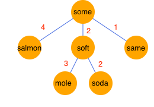

Some tests are performed with a sample BK-tree shown below. See the browser's console.
以下のような BK 木のサンプルを使っていくつかテストをします。コンソールを見てね。
Note: This sample is the same as that illustrated in Interesting data structures: the BK-tree (but the image file is one that I created).
なおこのサンプルは、「興味深いデータ構造：BK木」のサンプルと同じです (ただし画像は当方で改めて作成しました)。
As another exmple that uses a large complicated BK-tree, I also created a page for fuzzy search about drug names (in Japanese).
より大規模な BK 木を使った別の例として、薬の名前の曖昧検索ページも作ってみました。